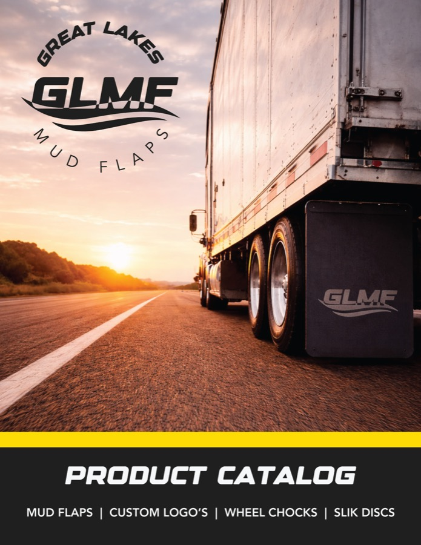
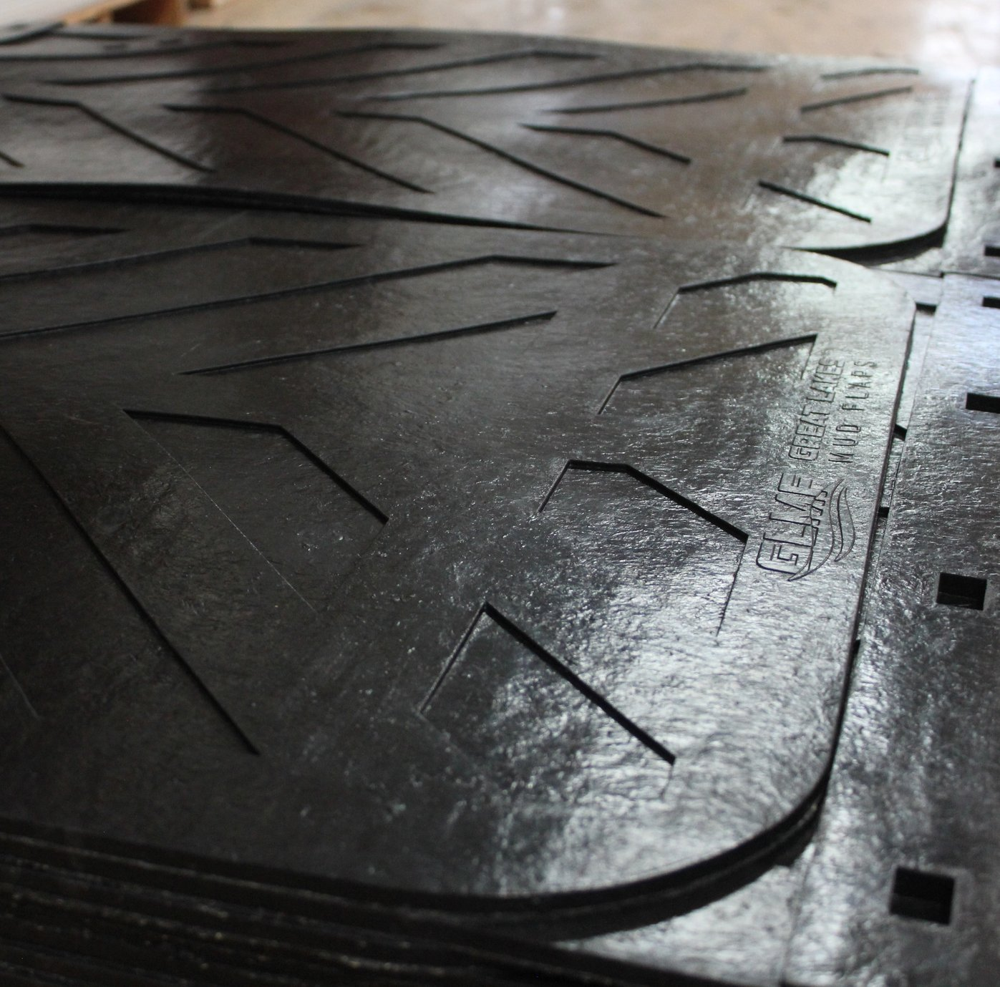
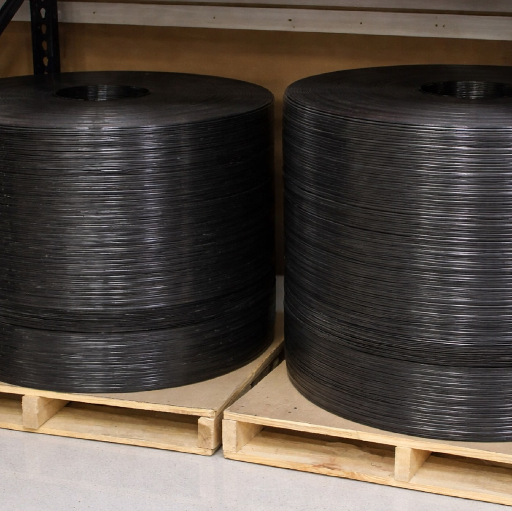
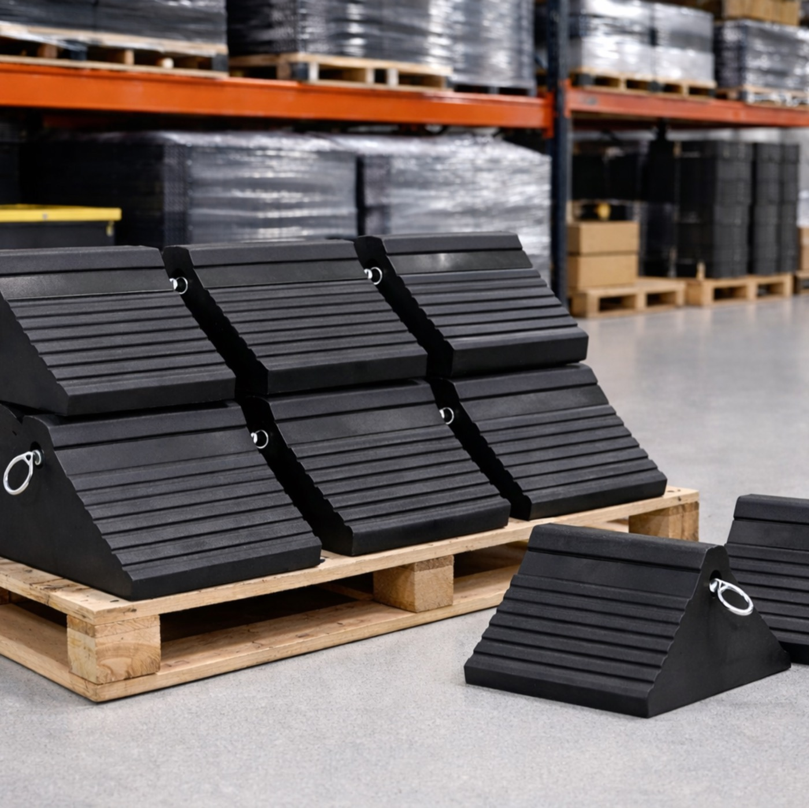
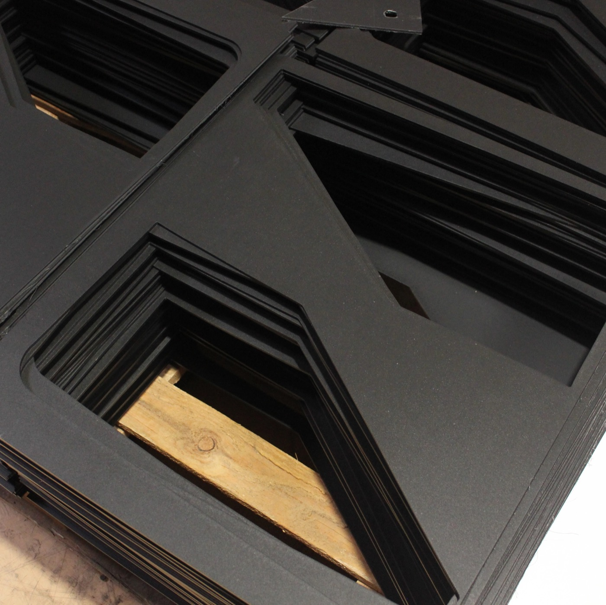

Custom Mud Flaps and Fleet Product Solutions

**The details below are only an overview. For the full line of products and capabilities, download our complete catalog which is the most comprehensive guide to everything Great Lakes Mud Flaps offers.
Available Products
Mud Flaps
Our mud flaps are offered in the most common industry sizes and made with rubber, poly, and poly-rubber blends for durability on every road. From distribution to fleet orders, we provide reliable, long-lasting performance. Each flap is engineered to withstand harsh weather, road debris, and daily wear.


Slick Disks
Slick disks help extend trailer life by reducing friction between the tractor and trailer. Made from durable, low-wear materials, they deliver smooth movement and dependable protection for your equipment. Their simple installation makes them an easy, effective addition to any trailer setup.
Wheel Chocks
Our heavy-duty wheel chocks provide stable, secure support for trucks and trailers during loading, unloading, and parking. Designed for strength and reliability, they help ensure safer operations in any environment. Each chock is constructed to maintain grip even on uneven or rugged surfaces.

Available Services
Screen Printing
We offer custom screen printing to display your logo, branding, or messaging directly on the mud flaps. The result is crisp, long-lasting artwork that holds up to weather, road conditions, and daily fleet use. Our team ensures accurate color matching and consistent quality across every order size.
Die Cutting
Our die-cutting capabilities allow for precise shaping of mud flaps to exact specifications. Whether you need specific dimensions, contours, or bolt patterns, we produce clean, accurate cuts every time. This process ensures a perfect fit for your equipment and a streamlined installation experience.

Hot Stamping
Hot stamping creates a bold, dimensional logo using heat and pressure to form a clean, premium imprint directly into the mud flap. This method delivers durable, high-contrast branding that stands up to weather, road debris, and heavy daily use. It is an ideal choice for large fleets looking for a long-lasting, professional finish that elevates their brand on every mile.
Unsure Where To Start?
We can help you:
- Find the right size or material
- Compare options
- Answer questions about printing or turn times